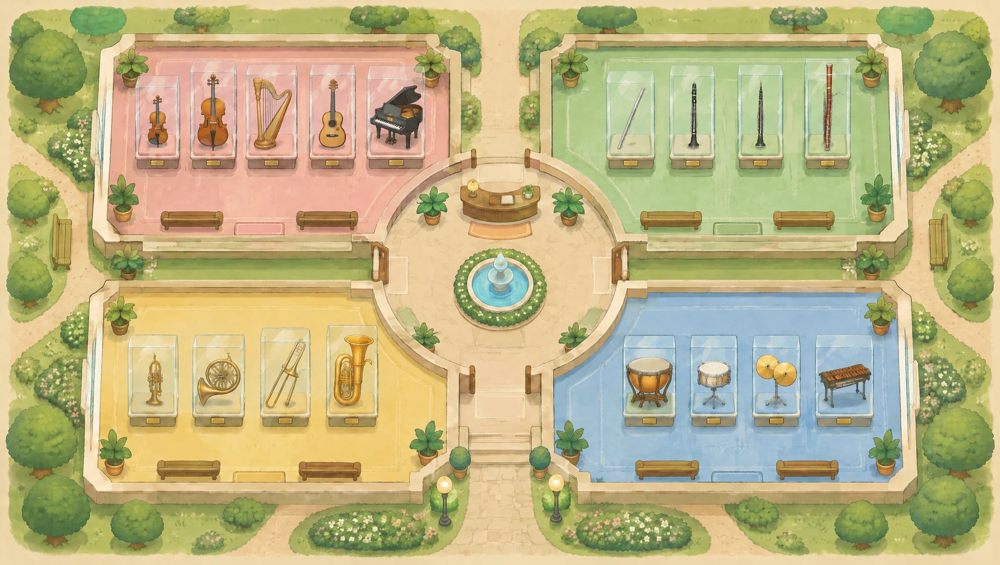
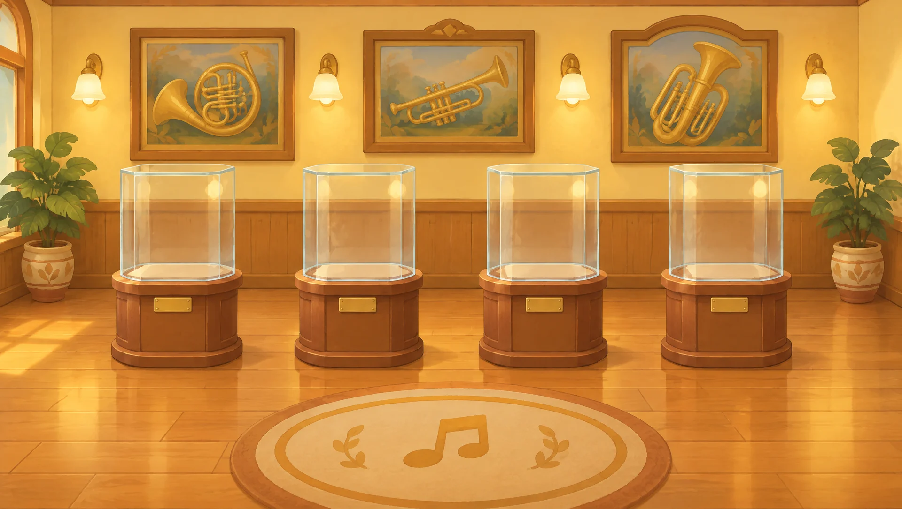
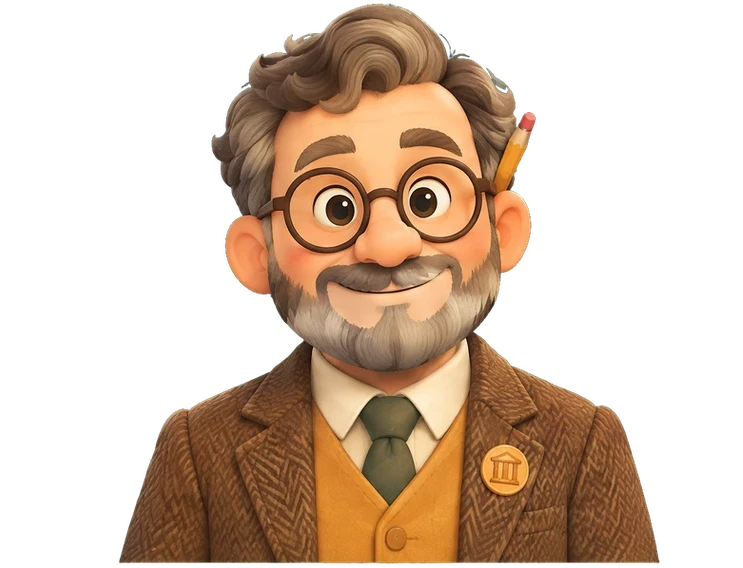

Obert cada dia · Entrada lliure
Cada instrument de l'orquestra té una família, i cada família té els seus avis. Vine a conèixer-los: com eren, d'on venien i, sobretot, com sonaven.
🎧 Porta auriculars o altaveus: aquí tot sona.
Quatre sales, quatre famílies. Tria'n una.

Toca una vitrina per obrir-la. Llisca per veure-les totes →

Museu dels Avantpassats
Aquest diploma reconeix que
ha recuperat les 21 fitxes de l’arxiu i ha descobert els avantpassats de tots els instruments de l’orquestra.

Dr. Martíhistoriador